ELO320 - Estructuras de Datos y Algoritmos
Marie González-Inostroza
Un proceso recursivo es un ciclo autorreferente cuya definición depende, en parte, de su propia ejecución
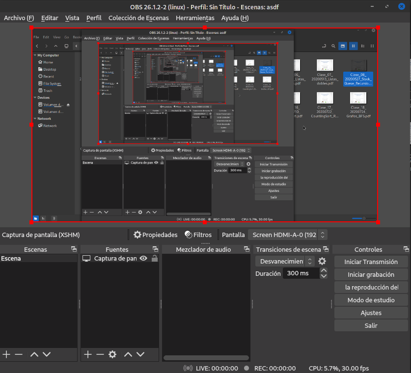
Una definición recursiva se compone de dos elementos básicos:
$ f(0) = 1 $ (caso base)
$ f(n) = n \times f(n-1)$ (llamada autorreferente)
int factorial(int n){
if (n<0)
return -1; //Valor de Error
// caso base, sin condicion -> loop infinito
else if(n==0)
return 1;
return n * factorial(n-1); // llamado a un elemento parcial del caso
}
Entenderemos por recursividad como la técnica en la cual alguna función depende de su propia definición, vale decir, se llama a sí misma para formar un ciclo.
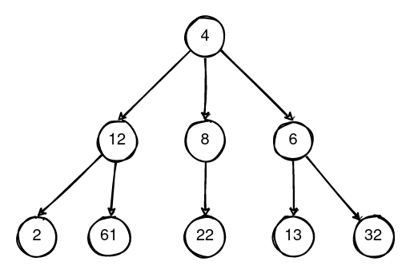
Estructura de dato no-lineal, jerárquica y enlazada, que permite el acceso eficiente a sus elementos.
Un árbol se forma por un conjunto finito de nodos enlazados entre sí según jerarquía padre-hijo.
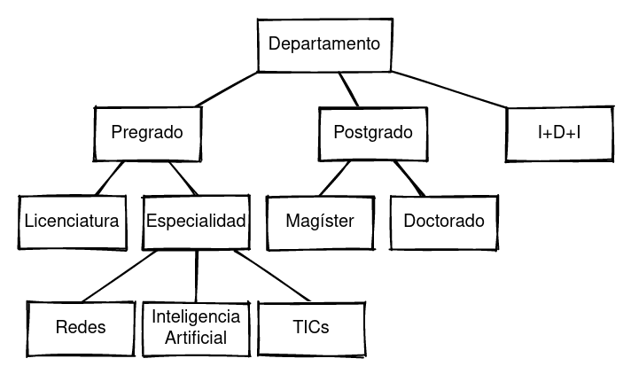
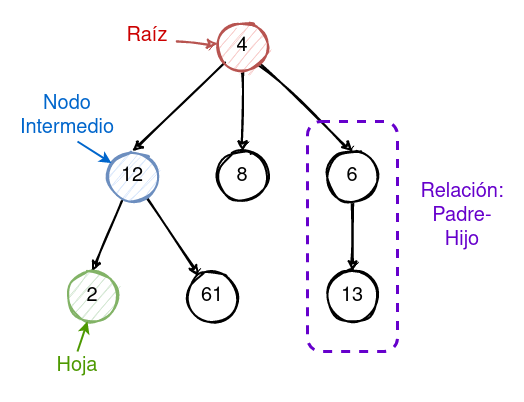
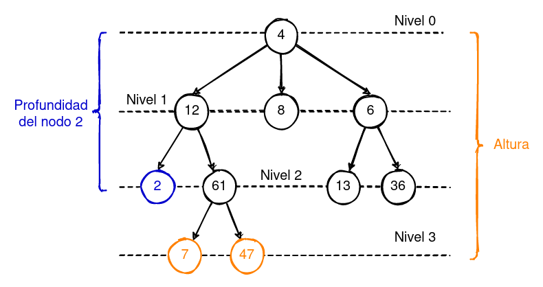
Los árboles son estructuras de datos recursiva, debido a que cada hijo de un nodo es la raíz de un árbol de menor altura (sub-árbol). Por esta razón, las funciones y métodos de árboles son facilmente aplicables con técnicas recursivas.
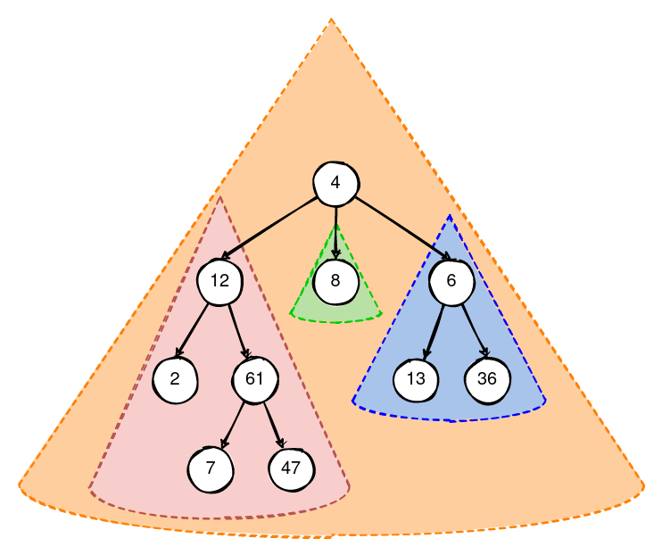
En este curso nos concentraremos en árboles binarios, i.e., árboles cuyo grado es 2.
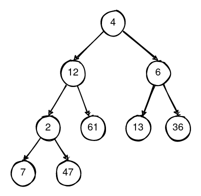
Un árbol binario tiene a lo más dos hijos, y se implementa muy similar a las listas enlazadas.
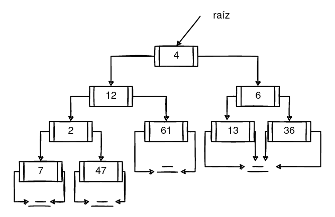
typedef struct nodo{
int dato;
struct nodo *hijo_izq;
struct nodo *hijo_der;
} nodo_t;
int main(int argc, char **argv){
nodo_t *raiz; // árbol vacío
return 0;
}
NULL, son hojas.Tiene como criterio visitar todos los nodos de un nivel antes de pasar al siguiente.
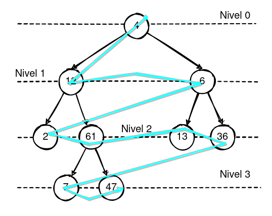
Tiene como criterio visitar los nodos por profundidad hasta llegar una hoja, luego retrocede y continúa.
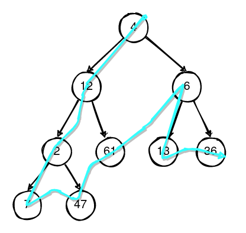
Tres de los tipos de recorrido en profundidad más utilizados son:
Recorrido recursivo que sigue la siguiente orden de visitas:
void print_preorden(node_t *root){
printf("Dato: %d\n", root->dato);
if(root->hijo_izq != NULL)
print_preorden(root->hijo_izq);
if(root->hijo_der != NULL)
print_preorden(root->hijo_der);
}
Recorrido recursivo que sigue la siguiente orden de visitas:
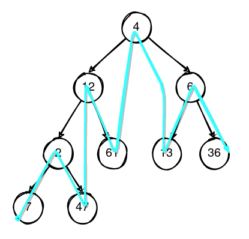
void print_inorden(node_t *root){
if(root->hijo_izq != NULL)
print_inorden(root->hijo_izq);
printf("Dato: %d\n", root->dato);
if(root->hijo_der != NULL)
print_inorden(root->hijo_der);
}
Recorrido recursivo que sigue la siguiente orden de visitas:
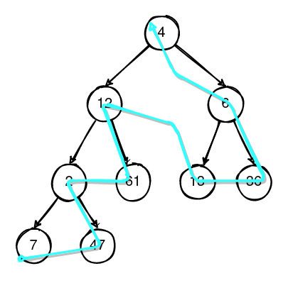
void print_postorden(node_t *root){
if(root->hijo_izq != NULL)
print_postorden(root->hijo_izq);
if(root->hijo_der != NULL)
print_postorden(root->hijo_der);
printf("Dato: %d\n", root->dato);
}
Implementa en C la estructura de un árbol binario:
Pregunta: ¿Qué diferencias observas entre los tres recorridos?
Representa en C la expresión (3 + 5) * 2 como un árbol binario.
Pregunta: ¿Qué ventajas tiene representar expresiones como árboles?